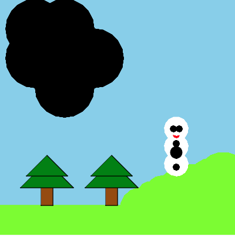
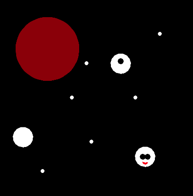
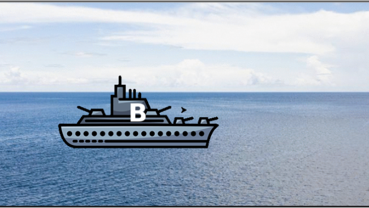
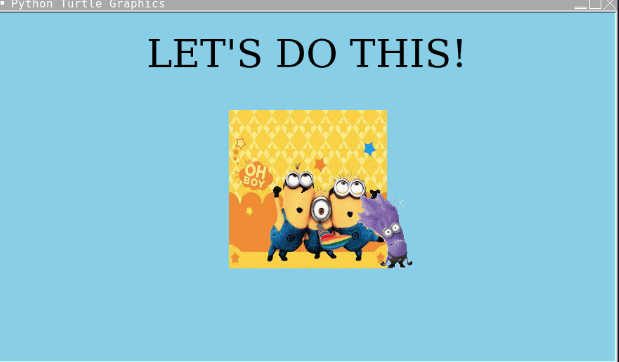
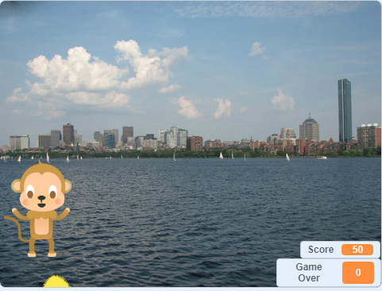
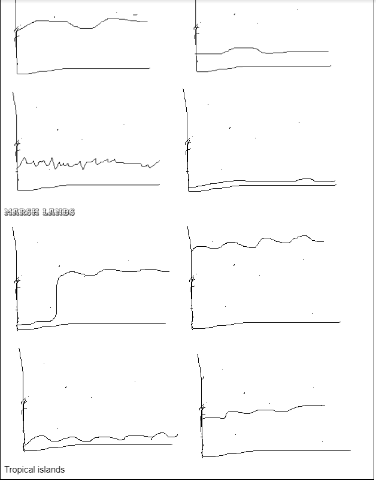

Home
Portfolio
About Me
This is my Portfolio Page!
1.1.9 project.


This project, named "Snowman Explosion", consisted of Frosty the Snowman being built into a grassy terrain and immediately hit by a meteor. This meteor explodes Frosty into three pieces, while sending him into space. In space, he floates over to Mars, where, because of the lack of an atmosphere, melts.
.
1.2.5 Project.

This project is named "battleship", it contained battleships in it and the goal was to destroy the battleship in the game. We added a code where when you destroy the battle ship, the battleship shows a little explosion animation
1.3.1 Project

This project is named "Happy Math", me and my partner created an e-card for kids in the hospital. We make the little kids do math and it is basically a calculator that supports them with the awnser and once they get an awnser write there is the girl from the minion movie dancing pops up. When the get one wrong we made it so then a sad emoji with a thumbs down pops up and gets mad at them.
Scratch Project

This project is our first scratch project and it is called monkee. It is a game where we have our main character which is a monkee, and the goal is to catch all of the bananas that are falling from the sky. But there is a little twist, there is also a hedgehog falling from the sky and if the monkee eats that hedgehog the game will be over. After every 60 points you get, the monkee will appear in a new setting.
3.16 Project

We learned that there are four sensors that take temperature, sound, light and movement. The data is put into a continuous stream and it is up to us to sort it and match it to our environment.We can see where the data points have a huge difference and then filter it there
We can filter it by decimal places and ranges as well. We can then make graphs of each data set and match them to our estimated graphs.
Final Scratch Project

This project was my final project and i made it on scratch. Its a game called Jumpee monkee. This game was simular to flappy bird but it was more of a monkey game. the monkey was jumping through the trees trying not to die if he collides with the tree.